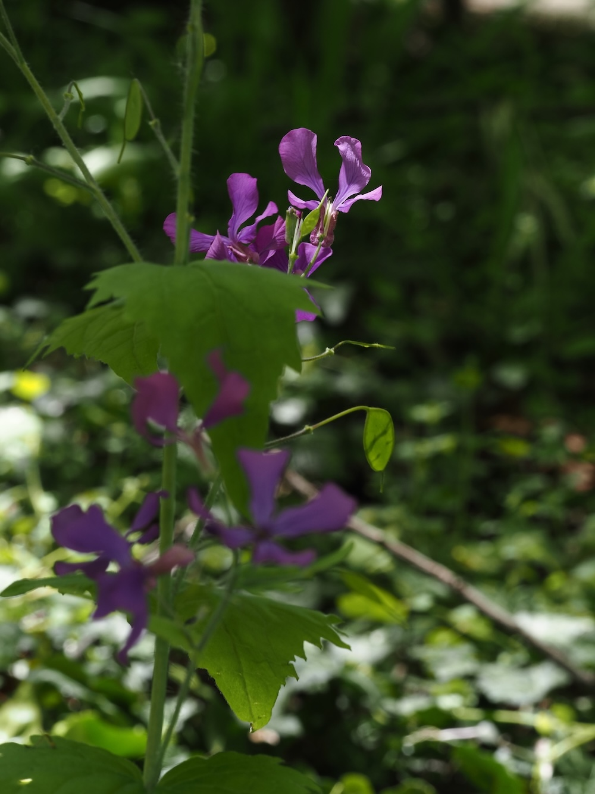
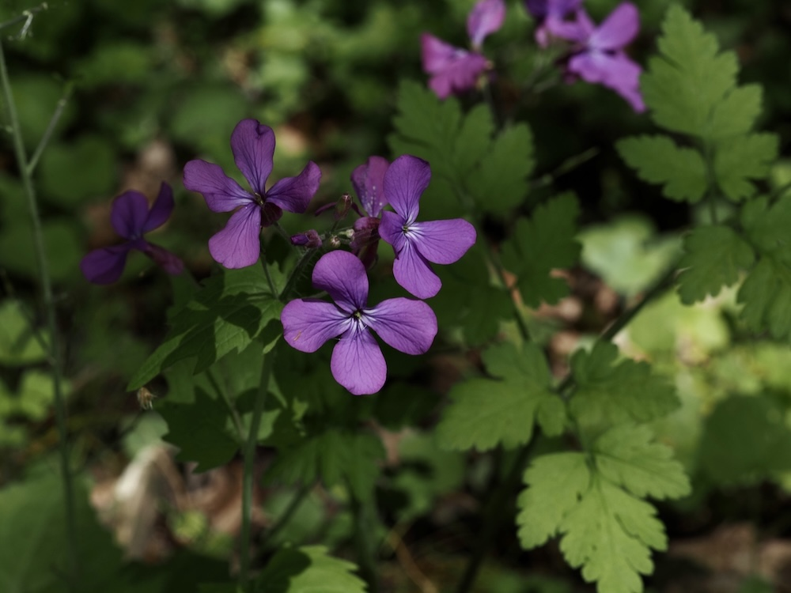

Frühlingsblume mit Mondtalern als Frucht — der Lieblingstraum aller Trockensträuße.



Mondtaler im Spätherbst
Die Blüten sind hübsch, aber die wahre Magie kommt nach der Blüte: Die Pflanze bildet flache, eiförmige Schoten, die im Reife-Stadium ihre dünnen, durchscheinenden Trennwände wie Pergament behalten. Diese „silbrigen Taler“ sehen aus wie kleine Vollmonde — daher der Name. Im Trockenstrauß leuchten sie über Monate hinweg und sind eine traditionelle Winter-Dekoration.
Garten-Flüchtling mit Geschichte
Lunaria annua stammt ursprünglich aus dem Balkan, ist aber seit dem 16. Jahrhundert in Mitteleuropa als Garten- und Heilpflanze etabliert. Sie verwildert heute oft an Wegrändern, alten Mauern und Friedhöfen — überall dort, wo einst Bauerngärten standen. Eine zweijährige Pflanze, die im ersten Jahr nur Blattrosetten bildet, im zweiten dann Blüten und Samen.
Wissenswertes & Merksätze
Erkennen leicht gemacht
Aufrechter, behaarter Stängel. Untere Blätter herzförmig-gestielt, obere lanzettlich-sitzend, beide grob gezähnt. Blüten violett (selten weiß), vier Blütenblätter, in lockeren Trauben. Später die typischen flachen, eiförmigen Schoten.
Liebling der Wildbienen
Ähnlich wie andere Kreuzblütler ist Lunaria im Frühling eine wichtige frühe Nektarquelle für Wildbienen — vor allem für Sandbienen, die zu dieser Zeit ihre Nester bauen.